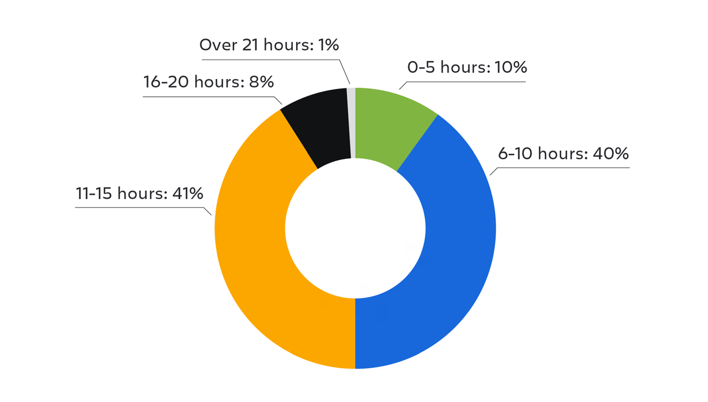
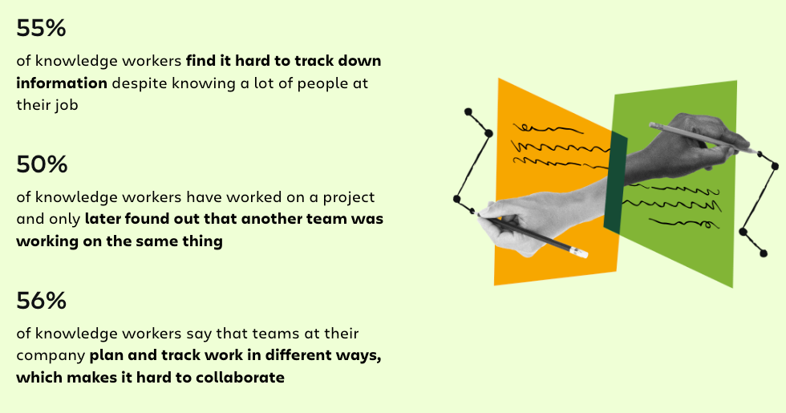
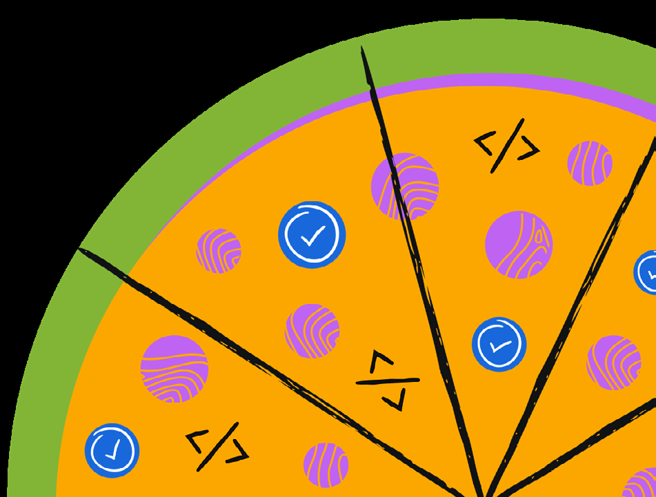

[前言 1 Atlassian首席技术官致辞]
[引言 2 2025年开发者体验现状]
[第一部分 3 AI对开发者工作流程的真正意义]
[3 AI在大多数开发团队中站稳脚跟]
[第二部分 7 将开发者置于AI采用的中心]
[7 组织效率低下继续干扰开发者工作流程]
[9 深入了解开发者摩擦点]
[第三部分 16 衡量开发者活动 != 生产力]
[16 SPACE框架受到大多数开发团队青睐]
[17 重新思考团队衡量DevEx的方式]
[第四部分 18 工程组织继续从IDP采用中获得收益]
[20 通过IDP进一步发展]
[第五部分 21 最终思考]
[第六部分 22 方法论]
[第七部分 23 推荐阅读]
Atlassian首席技术官
在经济动荡、AI快速突破以及对更快交付期望不断增长的一年中，开发者体验(DevEx)继续在领导层对话中占据中心地位。随着系统变得日益复杂，团队被不断升级的技术债务、精神疲劳、碎片化工具和笨拙的工作流程所拖累。生成式AI正在为软件开发的某些部分注入强大动力，同时在安全性、成本效率和系统可靠性方面提出了新的挑战。
这种创新与压力交织的复杂环境要求我们更仔细地审视AI如何重塑开发者体验——以及这对整个行业软件开发的未来意味着什么。
《开发者体验(DevEx)现状报告》是我们每年与来自世界各地的开发者和领导者交流的机会，以揭示这些挑战并识别哪些方法有效，哪些无效。我们启动这份报告的目标是量化这种普遍存在但难以衡量的开发实践。我们希望捕捉到整个行业真实团队开发者体验的更具体画面。每年，我们都会研究开发者如何在情感上与工作建立联系，评估摩擦点，并识别新兴趋势。
今年特别地，我们试图更多地了解开发团队如何使用AI。我们重新审视了团队对自身生产力的感受，什么对他们有效，以及哪些障碍继续挑战着他们的工作流程。
正如我们在Atlassian常说的，我们行业的无数部分在几十年来都发生了变化，但一个基本真理始终坚持：没有快乐就没有生产力。这一信念不仅驱动着我们构建自己产品和支持工程师的方式，也驱动着我们努力为各地团队改善开发者体验的方式。
从今年的报告中有很多收获。希望这份洞察合集也能帮助您的团队做出决策。
RAJEEV RAJAN
Atlassian首席技术官
AI工具正在产生更多价值： 68%的开发者报告每周节省超过10小时的显著时间，通过使用AI。这是与去年的显著跳跃，当时54%的开发者表示他们尚未通过使用AI体验到显著的生产力收益。
越来越多的开发者报告领导者不理解他们的痛点： 强烈的多数(63%)认为他们组织的高层领导不理解开发者在角色中面临的挑战，高于去年调查报告的44%。
开发者仍然在非编码任务上浪费宝贵时间：50%报告每周损失10+小时，90%损失6+小时或更多，主要由于组织效率低下。
最大的罪魁祸首？不仅仅是一件事——摩擦无处不在。开发者和管理者都将碎片化的知识景观视为关键挑战：搜索服务、文档、API或新技术入职消耗时间并拖慢团队。
经过2024年有限采用和开发者混合结果的一年，很明显AI现在正在为开发者节省时间。随着这个领域的成熟，以开发者为中心的方法是确保AI增强生产力的关键。在本节中，我们将深入调查洞察并探索真正有效的方面，以及需要改进的地方。
生成式AI(GenAI)是主力： 68%的开发者报告使用GenAI每周节省超过10小时，在非编码任务上获得显著收益。
管理者和开发者在AI收益上高度一致： 70%的管理者节省了超过四分之一的时间。
AI正在重塑开发者的工作周： 大多数开发者正在使用他们的AI时间节省来专注于改善代码质量。
在我们的2024年DevEx现状报告中，我们看到了领导层对AI的期望与开发者日常现实之间的脱节。虽然大多数管理者将AI列为改善开发者生产力和满意度的头号解决方案，但令人惊讶的是，只有38%的开发者报告了任何时间节省。
今年，我们希望重新审视开发者对AI的情绪状态、正在使用的工具以及AI为团队增值的领域。情况已经发生了显著变化。
现在大多数开发者都在依赖AI完成大部分任务，节省了超过四分之一的工作周时间。管理者在理解团队使用情况方面也有所改善。当今年再次被问及AI如何提高团队生产力时，管理者与开发者的看法一致，报告的时间节省与团队分享的情况相符。
68% 的开发者每周使用AI节省10+小时
大多数开发者表示，他们使用生成式AI(GenAI)工具来节省时间，68%的人报告在所有工作流程中每周节省超过10小时。虽然众多报告研究了编码任务的时间节省，但本次调查关注的是GenAI在整个工作周的整体影响。*
这比去年的调查有了显著提升，去年54%的开发者报告使用AI工具对生产力只有轻微或中等程度的改善。*
开发者使用GenAI工具在手动任务上每周节省的小时数，
来自今年的2025年开发者体验状况报告
30+小时：3%
少于4小时：1%
21-30小时：19%
4-10小时：31%
11-20小时：46%
去年2024年开发者体验状况调查的回应
关于AI工具对提高开发者生产力的帮助程度
极大：5%
完全没有：30%
很大：11%
中等：22%
轻微：32%
*在本次调查中，我们将开发者生产力定义为”快速交付高质量软件”。
70% 的管理者报告他们的团队整体每周使用GenAI节省10+小时
有趣的是，管理者和开发者在GenAI为团队节省多少时间方面高度一致。当被问及GenAI工具为开发者在原本需要手动执行的任务上节省多少时间时，70%的管理者表示超过四分之一的时间。
那么，开发者如何利用这些额外时间呢？首要任务是：提高代码质量。紧随其后的是构建新功能、增强工程文化和开发文档 —— 所有这些都获得了几乎相等的关注。
这对公司来说是个好消息 —— 开发者更快地完成任务，并利用节省的时间来提高质量和开发新功能。随着公司开始在代码辅助之外的更多任务中利用GenAI，这些收益将会复合增长。
开发者重新分配时间的前4种方式
当被问及除了编码之外还将GenAI用于哪些任务时，开发者在五个任务之间的分布相当均匀：搜索和查找信息、测试、编写和改进文档、自动化工作流程，以及与AI聊天或切磋。
开发者报告使用GenAI的非编码任务
将开发者置于AI采用的中心
开发者生产力状况：快照
• 领导者与开发者之间的同理心差距不断扩大： 绝大多数开发者(63%)认为其组织的高层领导不了解开发者在工作中面临的挑战和痛点，比去年的调查增加了19%。
• AI采用率在上升，但软件开发生命周期中仍存在摩擦： 开发者在非编码任务上损失了宝贵时间：50%的人报告每周损失10+小时，90%损失6+小时或更多，主要由于组织效率低下
• 协调一致 = 提高生产力： 当管理者努力理解开发者痛点时，我们看到更高的生产力水平。在障碍和效率低下方面损失的时间减少与对开发者体验投资满意度的提高直接相关。
组织效率低下继续干扰开发者工作流程
即使AI采用率上升且开发者工具生态系统不断增长，开发者仍然遭遇干扰，使他们脱离心流状态。现在50%的开发者报告由于效率低下每周损失超过10小时工作时间。从碎片化工作流程到搜索信息浪费的时间，这些持续存在的摩擦点继续限制AI收益的全部潜力。

50% 2025年
的开发者每周因效率低下损失10+小时
进一步加剧这一挑战的是，开发者感到领导者没有意识到阻碍他们的障碍。63%的开发者报告称，他们感到领导者在理解他们面临的摩擦点方面存在不足，这一比例也从去年的44%上升。
63% 2025年 2024年 44%
的开发者认为领导者不理解他们的痛点 / 的开发者认为领导者不理解他们的痛点
对于拥有500名开发者的公司，每个工程师每周损失10小时相当于每年约790万美元的损失*。
每周10小时的效率低下 = 拥有500名开发者的公司每年损失7,917,000美元
根据Stack Overflow 2024年开发者调查，2024年全球开发者的平均薪资为63,333美元（这是基于Stack Overflow开发者薪资范围60-75K美元计算的中位数薪资，如其报告的”按语言划分的薪资和经验” 部分所述）。如果开发者平均每周因低效率损失10小时，那么这些低效率每年给每100名工程师带来的成本为1,583,400美元。组织规模越大，低效率的成本就越高。
鉴于损失规模如此巨大，识别并解决开发者日常工作中的关键摩擦点至关重要。为了缩小与开发者的差距，管理者应该考虑采用以开发者为先、以数据为基础、以同理心为驱动的方法。
利用数据揭示问题，而非微观管理
管理者往往陷入仅通过产出（如完成的故事点或关闭的票据数量）来衡量开发者生产力的陷阱。实际上，开发者生产力本身很难衡量——但你可以衡量阻碍生产力的障碍和摩擦点。
通过定期反馈循环倾听
要真正了解开发者的痛点，积极倾听而不仅仅是分析数据至关重要。领导者应该为开发者创造空间，让他们定期分享关于路障、不明确需求或繁重工作负载的担忧。
通过持续收集反馈，你培养了一种文化，让开发者能够安全地表达挑战，从而实现持续改进。
深入了解开发者摩擦点
与去年相比，有几个摩擦点有所变化；查找信息、缺乏明确方向，以及与其他团队的协作在今年作为时间浪费的原因排名更高。
当被问及导致其工作角色最大摩擦和时间浪费的顶级领域时，开发者和管理者都报告了大量因素。
与去年的结果相比，我们看到三个领域在造成时间浪费方面有所上升：查找信息*、缺乏明确方向，以及与其他团队的协作。前5名中还有两个新的原因，都与日益增加的复杂性和认知负荷相关。
2025年：造成摩擦和时间浪费的顶级领域 1. 查找信息 2. 新技术 3. 在工具间切换上下文 4. 缺乏明确方向 5. 与其他团队协作 6. 技术债务
2024年：造成摩擦和时间浪费的顶级领域 1. 技术债务 2. 文档不足 3. 构建过程 4. 缺乏深度工作时间 5. 缺乏明确方向 6. 本地环境设置 7. 与其他团队协作
*在此比较的上下文中，我们将”查找信息”（2025年报告的顶级摩擦领域）和”文档不足”（2024年报告的第二大摩擦领域）视为同义词。“查找信息”和”文档不足”密切相关，通常有重叠的痛点。
分析瓶颈
我们的调查结果突出了一些值得关注的常见挑战：
ƒ 查找信息： 当团队能够自助获取信息时，他们的效率提高4.9倍，生产力提高4.4倍，适应性提高4.4倍。
ƒ 认知负荷： 持续搜索信息的需求是认知负荷的主要贡献者。根据2024年Stack Overflow开发者调查，61%的开发者每天花费超过30分钟搜索问题答案。
ƒ 技术债务： 技术债务减慢开发速度并增加成本。它可能导致更多bug，限制可扩展性，并降低团队士气。如果不加以解决，技术债务可能损害用户体验，并使产品更难适应或增长。
‘查找信息’：AI的核心优势仍然困扰着开发者
’查找信息’成为开发团队时间浪费主要原因的首位。有趣的是，’查找信息’以及第二和第三大摩擦点（新技术和在工具间切换上下文）都是AI的强项。随着团队报告采用率增加和时间节省增多，你会期望看到AI旨在解决的这些痛点有所减少。
以下是你的团队可以采取的一些可行步骤来应对信息过载：
改进文档并审查权限
开发者即使有AI也难以找到信息的原因之一，是因为工作文档化不好，或被权限阻止。
我们的2024年团队状态报告调查了5000名知识工作者，进一步验证了这一常见挑战。55%的受访工作者报告他们难以找到必要的数据。此外，50%的人还分享他们发现自己在重复另一个团队已经在做的工作。

该报告提醒我们，让开发者能够快速独立地找到所需信息大有裨益。
执着于文档质量
优秀的文档为团队更快达成一致奠定基础，节省时间，让他们能更专注于设计和创新。AI通过组织内容、改善语调和添加上下文来提高清晰度，简化了这一过程。AI还可以发现关键行动项目并总结冗长文档，同时无缝融入你的工作流程。配合快速审查，AI内容工具可以帮助团队创建更一致和易于访问的文档。
了解更多关于我们在Atlassian如何做到这一点。
构建和维护自助文档
报告还发现，能够轻松获取自助信息的团队效率高出4.9倍，生产力高出4.4倍，适应性高出4.4倍。
[当团队实现信息自助服务时，他们：]
[4.9倍] [4.4倍] [4.4倍] 更有可能 更有可能 更有可能 高效 高产 适应性强
团队还可以在IDE中使用AI集成来简化自助服务文档，提高可发现性，并加强协作。
Atlassian的Rovo CLI 是一个智能CLI体验的例子，它将智能开发辅助直接带到终端。它使开发者能够使用自然语言与AI代理交互，完成询问文档、总结代码更改或在工作流程中发布更新等任务。
通过将Rovo CLI连接到MCP（Model Context Protocol）服务器和IDE扩展，开发者可以直接从编辑器生成、更新和检索文档，减少上下文切换和手动搜索。MCP服务器成为集成知识管理和项目管理工具（如Confluence和Jira）的中央枢纽。
[部署Rovo Search后，71%的Atlassian开发者报告他们][能够找到完成工作所需的开发工具和技术栈的文档，][比去年的63%有所提升。]
了解更多关于团队协作趋势和挑战的信息，请查看完整的2024年团队状态报告。
[解决工作周中84%在IDE之外度过的时间问题]
如果你还记得报告开头提到的，68%的开发者通过使用AI每周节省10+小时。这是一个显著的时间节省！当我们考虑到更大比例的开发者由于组织效率低下每周要应对10+小时的摩擦时，仍有改进空间。
当我们扫描当今的开发者AI解决方案格局时，大多数功能都专注于编码。自动化开发者工作中最喜欢的部分比以往任何时候都更容易、更诱人。
[开发者AI格局]
[类别] [功能]
[代码生成] [使用AI编写或帮助编写代码]
[文档生成] [使用AI编写代码或程序文档]
[Pull Request摘要] [AI创建包含在Pull Request中的更改摘要]
[单元测试生成] [AI自动建议或为Pull Request中的更改创建单元测试]
[当今大多数开发者AI工具都可以归类到这四个类别中。这些功能涵盖了软件开发生命周期的很大一部分，][在影响力和实用性方面具有相当的威力。][它们还有一个共同点：都以编码为中心。]
编写代码：16%
其他工作：84%
[+IDC调查聚焦，2025年2月。“开发者如何分配时间？”]
这种不平衡减缓了交付速度，降低了价值，并削弱了士气。开发者没有发挥他们的创造潜力，而是被文档、会议和维护工作所困扰。
虽然优化编码时间很重要，更大的机会在于减少其他一切工作的摩擦。这是AI可以产生变革性影响的地方——简化非编码任务并改善整体开发者体验。
与AI协作的团队在性能和产出方面看到了指数级增长，为他们的组织提供了竞争优势。领导者可以通过突出内部成功案例来加速这种转变——展示开发者如何使用AI提升工作既能提供灵感，也能为其他人提供蓝图。
*IDC调查聚焦，2025年2月，“开发者如何分配时间？”
[弥合开发者与领导层之间的差距]
要让AI有意义地改善开发者体验，它必须解决真正的痛点——而不增加新的摩擦。这始于倾听。
开发者正在感受到这种脱节：63%的人说领导层不理解他们的痛点——比去年的44%大幅上升。*
开发者最接近工作，通常最先发现问题。但这些见解只有在清楚传达时才有帮助——需要具体的例子、可衡量的影响和业务背景。领导者需要通过回顾会议、调查和跨级会议来邀请并采纳这种输入，这些会议促进开放对话。
许多组织现在都有专门的开发者体验(DevEx)或开发者赋能团队，专注于减少摩擦和提高工作流程效率。这些团队在弥合领导层和工程团队之间的差距方面具有独特的优势，帮助发现真正的痛点并优先考虑解决方案——无论是否由AI驱动。授权DevEx团队领导这些对话确保改进基于开发者的现实，而不仅仅是领导层的意图。
当沟通双向流动——具有清晰度、同理心和意图时——团队建立信任，及早发现问题，并在最重要的事情上保持一致。
一旦摩擦点被清楚理解，下一步就是选择直接解决这些问题的解决方案。目标不是为了采用AI而采用AI，而是让开发者能够更快、更少阻碍地完成最佳工作。
不被损坏的工具、不清楚的文档或低效流程所困扰的开发者能够花更多时间做他们最擅长的事情——构建优秀的软件。我们在Atlassian亲身体验过这一点。这就是为什么我们相信领导层必须专注于简化工作流程、减少认知负荷，并解决拖慢团队速度的技术和运营债务。这一信念促使我们启动了内部倡议——开发者喜悦(Developer Joy)。
[“偿还技术债务和自动化手动流程][是一项持续的投资。就像加入健身房一样，这是一种生活方式的改变][始于最初的’重新恢复状态’推动。”]
Rajeev Rajan，首席技术官，Atlassian
通过开发者喜悦计划，我们自动化了重复性任务，如pull request管理，现代化了过时的测试库，并解决了长期存在的技术债务。我们还将开发者喜悦作为公司级OKR进行跟踪，确保在所有组织中的可见性，这样每个人都能为这个目标做出贡献——不仅仅是工程团队。
经过两年的专注努力，开发者满意度提高了50%。
我们的收获很简单：当我们倾听工程师的声音并根据他们的反馈采取行动时，我们能构建更好、更快、更有韧性的工程团队。
框架可以作为有用的起点，但最终没有单一框架能够完全捕捉到在你团队独特环境中最重要的内容。
SPACE框架被评为今年最常用的开发者生产力测量方法，超过50%的开发者使用它来测量他们的团队如何快速交付高质量软件。虽然这是今年调查中引入的新测量形式，但它迅速上升到榜首，去年的第一名”代码编写、删除或更新量”被挤到了第三位。
SPACE框架和部署频率日益增长的关注度可能表明测量开发者生产力的方法越来越平衡。
| 2025年前5名 | 2024年前5名 |
|---|---|
| 1. SPACE框架 | 1. 代码编写、删除或更新量 |
| 2. 开发频率 | 2. 部署频率 |
| 3. 代码编写、删除或更新量 | 3. 团队每个sprint完成的故事点数 |
| 4. 团队每个sprint完成的故事点数 | 4. 工作小时数 |
| 5. 工作小时数 | 5. 变更失败率 |
有很多框架——如SPACE和DORA指标——旨在让组织更容易测量工程性能。这些可以作为有用的起点，提供结构化的方式来思考满意度、效率和交付性能等方面。但最终没有单一框架能够完全捕捉到在你团队独特环境中最重要的内容。
真正的价值不在于完全采用框架，而在于深思熟虑地调整它以反映你自己独特的情况。
开发者体验和工程文化对每个组织都是独特的。每个团队都有自己随时间形成的身份，这是无法复制的。
为了准确了解你的团队表现如何以及什么对他们有效，重要的是要考虑你组织的背景、价值观和工作方式。
这并不意味着你需要从头开始。有一些公司在这方面做得很好，他们的旅程可以提供有价值的启发。但关键是要关注他们如何为他们的环境找到正确的测量方法，而不仅仅是他们最终测量的内容。试图直接将别人的指标应用到你自己的团队可能会适得其反，导致误导性信号。
大多数开发团队要么正在积极使用，要么正在计划使用Internal Developer Platform。
公司越来越多地转向Internal Developer Platform（IDP）来改善开发者体验，提高创新步伐，并推动标准化和合规性。我们的调查结果显示，98%的开发者在正在积极使用或计划使用IDP的组织中工作。
IDP使开发者能够花更多时间构建软件，减少在与编写代码无关的繁重活动上花费的时间。开发者不需要搜索文档、弄清楚服务所有权或拼接零散的工具，而是获得一个单一UI，提供他们快速移动和跨团队协作所需的所有信息——从服务健康指标到部署pipeline和集成指南。
随着IDP采用的增长，其好处变得越来越清晰，组织意识到这些平台可以显著加速开发周期并提高整体运营效率。
不使用IDP：2% 使用IDP：74% 计划采用IDP：24%
使用IDP的四大报告好处是改善可扩展性和可靠性、提高开发者体验和生产力、缩短上市时间以及降低运营成本。
改善应用可扩展性和可靠性 | IDP通过自动化资源分配、确保一致的环境和快速问题检测来改善可扩展性和可靠性。
增强开发者体验和提高生产力 | 通过自动化繁重任务和简化工作流程，IDP改善了开发者体验，使团队能够专注于高优先级项目。
更快的上市时间 | IDP通过为开发者提供自助服务工具、自动化工作流程和实时反馈来加速上市时间，实现更快的开发和部署。
降低运营成本 | IDP通过集中事件管理来降低运营成本
[跟踪和依赖关系，实现更快的问题]
[解决和决策制定。]
[通过 IDP 进一步提升]
要从内部开发者平台中获得最大价值，应专注于通过便捷的入门体验、低认知负荷和自助服务工作流程来改善开发者体验。像对待产品一样对待平台——收集反馈、跟踪使用情况，并优先考虑开发者真正需要的功能。通过可重用组件和模板推动一致性，并使用护栏和自动化安全扩展，在不牺牲安全性的前提下支持快速开发。
[达美乐比萨如何实现] [“] [工程卓越和系统] [在紧急关头，特别是在][可靠性与 Compass*] [商业环境中]
[挑战： [每一分钟的]] 在 2022 年转向产品交付模式后，达美乐比萨企业有限公司意识到需要一个内部[性能下降都会影响]开发者门户。文档分散在各个[销售业绩，能够通过]项目空间中，导致团队和信息孤岛。缺乏[Compass 找到]共享组件和最佳实践，他们的 IT 环境[所需的信息]迅速陷入软件混乱状态。职责的转变也意味着团队需要继承[帮助我们更快地找到]许多他们从未接触过的组件的支持服务。团队也缺乏[信息并]对其系统健康状况和性能的关键洞察。[为企业节省资金。]]
[安德鲁·弗雷泽] [达美乐比萨企业软件工程经理]
解决方案： 达美乐使用 Compass 中的标准化组件来推动系统统一性，这使工程师能够快速入门并在最小干扰下维护最佳实践——即使面临年度团队变动。此外，配置 Jira 项目使用 Compass 组件的能力提供了跨支付 API、团队和项目跟踪问题的功能。Compass 软件目录的统一真实来源让团队能够快速定位组件文档和所有权信息，推动更快的事件响应并改善系统正常运行时间和可靠性。

[*内容来源于 ][“从面团到部署：达美乐的 ]
[Atlassian Compass 成功秘诀”][ 在加利福尼亚州阿纳海姆举办的 Team ’25 大会]
[最终思考]
虽然 AI 被证明是提高生产力的强大杠杆，但开发者体验仍面临显著障碍。
AI 工具的采用正在增加，开发者和管理者现在都报告了有意义的时间节省——在编码和非编码任务中通常每周节省 10+ 小时。在工程组织中扩展这些生产力收益将来自解决每天困扰团队的更深层工作流效率问题。
开发者和领导层之间不断扩大的同理心差距是一个日益严重的问题。超过 60% 的开发者认为他们的领导不理解他们面临的挑战，超过一半的人报告由于组织效率低下每周损失超过 10 小时。这些不仅仅是生产力问题——它们是文化问题。
像 SPACE 这样的框架和内部开发者平台(IDP)等工具，特别是与 AI 配合使用时，正在帮助组织采用更全面的方法来衡量和改善开发者体验。但仅有数据是不够的。对话、同理心和专注于现实世界的摩擦点才是真正推动改进的关键。
最终，改善开发者体验不是追逐最新工具或痴迷于输出指标。它关乎理解软件开发的人性一面——消除障碍、深度倾听，并创造一个开发者能够发挥最佳工作的环境。
[结语：]
ƒ AI 为团队提供了真正的优势，仍有增长空间。 开发者和管理者正从 AI 中看到实时节省——通常每周超过 10 小时——但大多数工具专注于编码，而这只是开发者整体工作流程的一小部分。
ƒ 组织效率低下严重消耗开发者时间。 超过 50% 的开发者由于工具混乱、信息访问不畅和上下文切换等效率问题每周损失 10+ 小时——突显了系统性变革的必要性。
ƒ 开发者和领导层之间存在日益扩大的同理心差距。 63% 的开发者认为他们的领导不理解他们的挑战，表明这种脱节可能影响士气、留存率和生产力。
ƒ 像 SPACE 这样的整体框架正在取代仅关注输出的指标。 SPACE 框架现在是衡量开发者生产力的首选，标志着从代码行数等过时指标向更以人为中心、基于结果的评估的转变。
ƒ 真正的开发者体验提升来自解决摩擦点。 要真正改善开发者体验，组织应该超越自动化编码等令人愉快的任务，专注于解决工作中令人沮丧的部分——信息孤岛、方向不明确和技术债务。
[方法论]
我们与韦克菲尔德研究公司合作，在美国、澳大利亚、法国、德国、英国和印度对总共 3,500 名开发者进行了在线调查。
ƒ 调查于 2025 年 3 月 13 日至 2025 年 3 月 23 日进行 ƒ 1,750 名受访者的职位最低为软件开发经理级别 ƒ 1,750 名受访者的职位低于软件开发经理级别 ƒ 受访者通过电子邮件邀请招募
统计显著性：
任何样本的结果都受到抽样变异的影响。这种变异的程度取决于调查的人数和报告的百分比。在这项研究中，有95%的把握，报告的结果与全球样本的实际情况相比在±1.66个百分点范围内，与美国的实际情况相比在±3.1个百分点范围内，与澳大利亚、法国、英国和印度的实际情况相比在±4.38个百分点范围内，这是相对于如果对整个人口进行调查所得出的结果而言的。
推荐阅读
想了解更多？
关于Atlassian： Atlassian释放每个团队的潜力。我们的AI驱动软件开发平台帮助工程团队更快地交付高质量软件。超过30万个组织——从初创公司到全球企业——信任Atlassian来加速软件开发生命周期的每个阶段，从构思到影响。
了解更多关于Atlassian的信息，获取更多关于开发者体验的见解：
从面团到部署：How We Build 代码和CI/CD，由Atlassian平台驱动 多米诺成功秘诀 工程博客 配合Atlassian Compass
[了解更多] [关于我们如何帮助改善Atlassian内部的开发者体验。]
2025年开发者体验现状 [© 2025 Atlassian. 保留所有权利. CSD-15683_DRD-07/25]